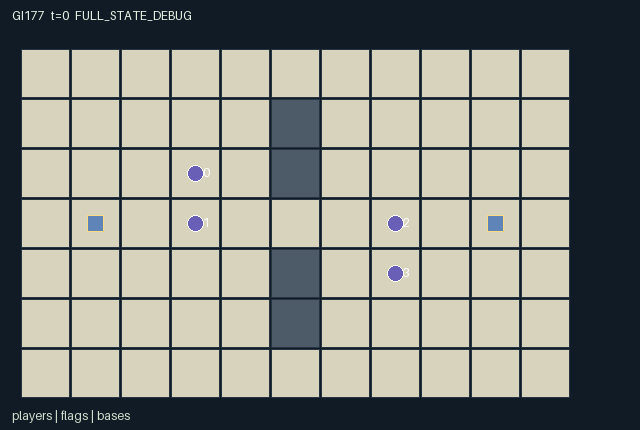

GI177 / SPATIAL
标记交换
两人队配合夺旗、标记、交接和营救；救援花费自身能量，却能提前恢复队友行动。
Original saved demonstration
Recorded native state, often authored scripts or interventions; information scope and failures are preserved in the original provenance. This is a saved demonstration, not live browser play.

Release verification episode
Untrained uniform legal actions. Actual JAX state sampled along the full original episode; full-state debug camera. No human performance or learning claim.

Run this game
crucibles play --game 177
Start Python locally, then open the address printed by the terminal. Installation, multiplayer, takeover and keyboard controls →
Objective, rewards & ending
Exact task contract
{
"objective": "Each controlled pair captures the opposing flag while preserving its own flag at home, coordinating tags, rescue, handoff and finite recharge.",
"natural_termination": "Either team reaches two captures. H=96 otherwise truncates; no scripted pursuer or automatic policy participates.",
"interaction": "A tag temporarily removes an opponent movement/interaction opportunities and drops possession. An adjacent teammate can pay for early rescue, or receive a handed flag and finish the route. Team depot recharge is finite and contested by teammates.",
"observation_access": "All dynamic strategic state is public and encoded: map, positions, teams, energy, frozen timers, flag possession, depot stock, scores and tag/rescue/pass/score events. All entity visibility masks are true; own identity/team labels distinguish the controlled perspective."
}Declared per-step reward bounds: -1.0 to 1.0. Observability: fully_observable.
Rules
- Two controlled pairs oppose each other. Move on public floor; co-location, crossing and swaps are allowed. Walls leave middle and outer routes.
- Tag at distance at most one after movement: nearest free enemy, then lower index. Each successful attacker spends one energy; simultaneous mutual tags both land.
- A new tag freezes for three ticks and drops carried flag. Frozen players can wait or spend two energy to thaw. Natural timer expiry is free.
- An untagged free teammate may spend one energy to rescue an adjacent frozen player. Fresh same-tick tags cannot be rescued; release changes the next action boundary.
- At an exact flag cell, interact to return your own displaced flag or pick up the enemy flag. Contested pickup resolves by lower actor index.
- Pass a carried flag to your adjacent free teammate. Scoring requires enemy flag at your own exact base and your own flag home; scored enemy flag returns home.
- Recharge near your own base draws from its finite four-unit depot. No energy or depot stock regenerates automatically.
- Two captures terminate the episode. Each capture rewards both scoring teammates +1 and both opponents -1.
Original mechanism document (historical status wording retained)
# Tag Exchange
Four controlled players form fixed pairs (0,1) and (2,3) on an 11 by 7 arena. Base/flag homes are (1,3) and (9,3). Central wall cells at x=5, y in {1,2,4,5} leave a middle passage and outer routes. Positions govern every tag, rescue, pickup, handoff, charge and score. Co-location, swaps and crossing are deliberately allowed; a crossing move alone is not a tag. This base instance is deterministic: the public reset key is accepted but unused, and no design-mandated random distribution is being replaced.
Actions are 0 wait, 1 north, 2 east, 3 south, 4 west, 5 tag attempt, 6 rescue attempt, 7 flag interaction, 8 flag pass, 9 depot recharge, 10 self-thaw. All four agents choose one action simultaneously. Unfrozen tag/rescue attempts with energy and flag-interaction attempts are legal even without a current target; an unsuccessful attempt has no effect or cost. This permits anticipating another player's movement. Pass requires possession, and movement/recharge/self-thaw have explicit masks. A frozen player remains an active controlled role with wait and, if affordable, self-thaw; it is not an independently finished agent.
After all legal moves, tags resolve simultaneously from starting-unfrozen attackers and starting-unfrozen enemies at Manhattan distance at most one. The target is nearest, then lowest index. Each successful attacker spends one energy even if a teammate tags the same enemy. Mutual tags both succeed. A new tag sets frozen=3; otherwise the previous timer decreases by one. Tagging a previously frozen target is disallowed. The new tag drops every carried flag at the actual post-movement contact cell and prevents that player's same-tick object/recharge/rescue actions.
An already-frozen player can spend two energy to clear its timer. An untagged, starting-free teammate may spend one energy to clear its adjacent teammate's still-positive timer. A fresh same-tick tag is not rescuable. A timer that naturally expires on this tick needs no rescue and costs no rescue energy. A released player could not move on the release tick, since its action was chosen under the old frozen mask; its next boundary opens movement and interaction choices. Depot recharge requires own-base distance at most one, room below energy three, and remaining team stock. Each depot starts with four units, shared by its two players; lower player index wins the last unit. No automatic energy/stock regeneration occurs.
Flag interaction uses exact cells. An actor returns its own displaced unheld flag to its base and can pick up its unheld enemy flag if it carries none; ascending actor order resolves simultaneous requests. Returning a flag already at home is not an event. A carrier may pass to its only teammate at distance at most one if the recipient is free, untagged and empty-handed. Possession immediately follows the recipient's actual position. A team scores automatically when its enemy flag is at its own exact base in a free teammate's hands while its own flag is home and unheld. The scored flag returns to the opposing base, and play continues until a team reaches two captures. Scores, event flags and possession are native state, not renderer-generated transitions.
Both scoring teammates receive +1 and both opponents -1 on a capture. There is no reward for cosmetic tagging or rescue. Finite energy creates an opportunity cost for duplicate tags, premature self-thaw and repeated rescues; recharge competes for a shared finite depot. Carrier/support splits, escorting, intercepting, returning a stolen home flag, rescuing or handing possession across a threatened cell are plausible alternatives. A player's best response can depend on teammate position, opponent energy, flag state and whether support will act. No policy, payoff ranking or learning outcome has been measured.
The flat observation exposes the full dynamic strategic state and public topology, with observer identity/team codes. Every entity has true role-visibility masks. Agent attributes bind team, energy and freeze timers; flag positions/holders follow actual possession; base attributes bind actual depot stock and capture scores. Tag/rescue/pass/score flashes are per-step flags, frozen is a level, and scores is a cumulative counter. Intended invariants include energy 0..3, depot stock 0..4, frozen 0..3, nonnegative scores, each flag at one position with at most one holder, and only opposing-team possession. Co-location is legal, so unique active positions is not declared.
The literal seed-17701 playthrough intends to show an opponent tag, teammate rescue, a carrier route, a handoff and a capture. It is an unexecuted controlled joint-action script; even its intended score is not an execution receipt. The paired hypothesis reuses its three-step prefix, changes only player 1's rescue to wait, and then waits identically. It is intended to change player 0's remaining freeze and next legal movement opportunities, without issuing a suffix move that would be legal in only one branch. Prospective obstacles, energy, team/flag tasks or sight restrictions would require new frozen identities and tests.
Status: AUTHORED_NOT_EXECUTED. All strategies, scripts and paired interventions are source-reasoned hypotheses. No successful replay, effect magnitude, learnability, reward gain, optimality, non-isomorphism or meta-RL transfer is claimed.
The source uses only JAX/JAX NumPy imports; it was never imported or called. The author ran only the supplied trusted stdlib AST whitelist and manifest/scene data validators, plus data-only hashes, state-key/action-range/one-action-difference checks. Shapes, dtypes, jit/vmap parity, numerical bounds, gameplay, rendering, legal script execution and terminal absorption require independent frozen-source integration.
All agents are controlled; there is no scripted teammate, pursuer, planner or oracle. Every step receives a joint action vector. Invalid/out-of-range/masked actions become wait. A live raw step increments t once. A terminal input preserves every state leaf and observation, returns zero rewards and true dones, and preserves causes. Natural completion takes priority over H=96 truncation. The outer wrapper must perform auto-reset.
Representation: counters, identifiers and inventories use int32; flags use bool; observations/rewards use float32. The external reset key is not duplicated in state. Stochasticity, where present, uses only that key. No design-required distribution was removed to satisfy the interface.
Provenance: only the 22 current closed inputs listed in author_input_freeze.json were read. The five official reference files were read as bytes for integrity only; their text/code was not semantically consulted, copied or executed. These are original game kernels, with no copied upstream code or incorporated upstream license text. Reference URLs remain input-bundle provenance. No prior candidates, selection/training outcomes, heldout inputs, network sources or external models were used. Adapters, real trajectories and animation belong to independent integration. New A/O/U contracts do not license reuse of old policy weights or two-player ranking statistics.
Literal source evidence:
- candidate.py:L80: `targets = (distance <= 1) & enemy & free[None, :]`
- candidate.py:L82: `attack = (actions == 5) & free & (state['energy'] > 0) & jnp.any(targets, axis=1)`
- candidate.py:L85: `frozen = jnp.where(tagged, 3, jnp.maximum(state['frozen'] - 1, 0))`
- candidate.py:L91: `self_thaw = (actions == 10) & ~free & (energy >= 2)`
- candidate.py:L96: `rescue = rescue & (distance[jnp.arange(4), mate] <= 1) & (frozen[mate] > 0) & ~tagged[mate]`
- candidate.py:L111: `stock = stock.at[team].add(-charge.astype(jnp.int32))`
- candidate.py:L122: `holder = jnp.where(dropped, -1, holder)`
- candidate.py:L133: `pickup = interact & ~jnp.any(holder == i) & (holder[enemy_flag] < 0) & jnp.all(flag_pos[enemy_flag] == pos[i])`
- candidate.py:L142: `pass_flag = pass_flag & (distance[safe_holder, receiver] <= 1) & (frozen[receiver] == 0) & ~tagged[receiver]`
- candidate.py:L153: `home = (holder < 0) & jnp.all(flag_pos == state['base_pos'], axis=1)`
- candidate.py:L156: `goal = (enemy_holder >= 0) & home & (state['team'][scorer] == jnp.arange(2)) & (frozen[scorer] == 0)`
- candidate.py:L165: `s['terminated'] = jnp.any(s['scores'] >= 2)`
- candidate.py:L168: `rewards = goal[state['team']].astype(jnp.float32) - goal[1 - state['team']].astype(jnp.float32)`
- candidate.py:L190: `next_state = jax.tree.map(lambda new, old: jnp.where(state['done'], old, new), proposed, state)`
Commands
Roles & abilities
agent_0 team 0 player 0
agent_1 team 0 player 1
agent_2 team 1 player 2
agent_3 team 1 player 3
Observation permissions
Training receives only the original observation rows. Role cameras use declared visibility; debug cameras are explicitly marked. Local benchmark records log debug exposure and role takeover history.
Exact observation layout
[
{
"slice": [
0,
4
],
"meaning": "Observer identity one-hot",
"visibility": "self"
},
{
"slice": [
4,
6
],
"meaning": "Observer team one-hot",
"visibility": "self"
},
{
"slice": [
6,
7
],
"meaning": "Clock / 96",
"visibility": "public"
},
{
"slice": [
7,
84
],
"meaning": "Public row-major 7 by 11 floor=0 wall=1 map",
"visibility": "public"
},
{
"slice": [
84,
92
],
"meaning": "Player-major [x/10,y/6]",
"visibility": "public"
},
{
"slice": [
92,
96
],
"meaning": "Player energy / 3",
"visibility": "public"
},
{
"slice": [
96,
100
],
"meaning": "Freeze timers / 3",
"visibility": "public"
},
{
"slice": [
100,
104
],
"meaning": "Player team indices 0 or 1",
"visibility": "public"
},
{
"slice": [
104,
108
],
"meaning": "Flag-major [x/10,y/6]",
"visibility": "public"
},
{
"slice": [
108,
110
],
"meaning": "Flag holder code (holder+1)/4; 0 means ground/home",
"visibility": "public"
},
{
"slice": [
110,
114
],
"meaning": "Team base-major [x/10,y/6]",
"visibility": "public"
},
{
"slice": [
114,
116
],
"meaning": "Remaining depot stock / 4",
"visibility": "public"
},
{
"slice": [
116,
118
],
"meaning": "Team capture counts / 2",
"visibility": "public"
},
{
"slice": [
118,
122
],
"meaning": "Players tagged this step",
"visibility": "public"
},
{
"slice": [
122,
126
],
"meaning": "Players rescued this step",
"visibility": "public"
},
{
"slice": [
126,
130
],
"meaning": "Players passing this step",
"visibility": "public"
},
{
"slice": [
130,
132
],
"meaning": "Teams scoring this step",
"visibility": "public"
},
{
"slice": [
132,
135
],
"meaning": "Joint done, natural termination, truncation",
"visibility": "public"
}
]Entity visibility & attributes
[
{
"id": "players",
"kind": "agent",
"count": 4,
"position": [
"agent_pos"
],
"active": [
"agent_active"
],
"visibility": [
"agent_visibility"
],
"attributes": [
{
"state_path": [
"team"
],
"meaning": "Team index",
"display": "category"
},
{
"state_path": [
"energy"
],
"meaning": "Finite action/recovery energy",
"display": "bar"
},
{
"state_path": [
"frozen"
],
"meaning": "Frozen ticks remaining",
"display": "number"
}
]
},
{
"id": "flags",
"kind": "object",
"count": 2,
"position": [
"flag_pos"
],
"active": [
"flag_active"
],
"visibility": [
"flag_visibility"
],
"attributes": [
{
"state_path": [
"flag_team"
],
"meaning": "Flag home team",
"display": "category"
},
{
"state_path": [
"holder"
],
"meaning": "Current holder index; -1 ground/home",
"display": "category"
}
]
},
{
"id": "bases",
"kind": "landmark",
"count": 2,
"position": [
"base_pos"
],
"active": [
"base_active"
],
"visibility": [
"base_visibility"
],
"attributes": [
{
"state_path": [
"recovery_stock"
],
"meaning": "Finite depot recharge units",
"display": "number"
},
{
"state_path": [
"scores"
],
"meaning": "Team captures",
"display": "number"
}
]
}
]Actual verification & provenance
Per-game execution receipt
{
"game": "gi177",
"status": "PASS",
"verification_revision": 2,
"source_sha256": "12a058e28bdb121dfe6afffc3eb56e0dabaafcc872f2fbc5938da1a3a84c5355",
"seed": 20261101,
"runtime": {
"jax": "0.4.38",
"numpy": "1.26.4",
"devices": [
"TFRT_CPU_0"
]
},
"dimensions": {
"num_agents": 4,
"observation_size": 135,
"num_actions": 11,
"max_steps": 96
},
"checks": {
"eager_reset": {
"status": "PASS",
"seconds": 0.9790318012237549
},
"observation_spaces_legal_masks": {
"status": "PASS",
"seconds": 1.4124243259429932
},
"eager_step": {
"status": "PASS",
"seconds": 3.4385287761688232
},
"jit_reset": {
"status": "PASS",
"seconds": 0.2819831371307373
},
"jit_step": {
"status": "PASS",
"seconds": 1.755387544631958
},
"eager_jit_integer_parity_float_measurement": {
"status": "PASS",
"seconds": 0.005509614944458008
},
"jit_vmap_reset": {
"status": "PASS",
"seconds": 0.1523735523223877
},
"jit_vmap_step": {
"status": "PASS",
"seconds": 1.9301972389221191
},
"outer_autoreset_api": {
"status": "PASS",
"seconds": 1.4239556789398193
},
"full_original_horizon_episode_and_render": {
"status": "PASS",
"seconds": 1.1226470470428467
}
},
"human_scores": null,
"browser_controls": "PENDING",
"failures": [],
"elapsed_seconds": 13.16738748550415,
"float_parity_max_abs": 5.960464477539063e-08,
"numerical_parity": "UNDETERMINED_NONZERO_FLOAT_DIFFERENCE",
"raw_terminal_absorbing": "PASS",
"terminal_outer_reset": "PASS",
"episode_steps": 96,
"scripted_random_returns": [
0.0,
0.0,
0.0,
0.0
],
"terminal": true,
"demo_information": "FULL_STATE_DEBUG",
"demo_frames": 25,
"render_roles_checked": 4
}Chromium control verification
{
"game": "gi177",
"status": "PASS",
"human_scores": null,
"engineering": true,
"checks": [
"catalog_selected_and_real_native_reset",
"dom_queue_and_native_step",
"second_participant_ownership_and_native_joint_step",
"all_roles_individually_controllable_no_role_cap",
"explicit_debug_camera",
"release_to_pure_ai_without_reset"
],
"seconds": 3.56646990776062
}Original identity and file hashes
{
"id": 177,
"key": "gi177",
"title": "标记交换",
"summary": "两人队配合夺旗、标记、交接和营救；救援花费自身能量，却能提前恢复队友行动。",
"tags": [
"团队夺旗",
"有成本救援"
],
"family": "spatial",
"dimensions": {
"num_agents": 4,
"observation_size": 135,
"num_actions": 11,
"max_steps": 96
},
"source_sha256": "12a058e28bdb121dfe6afffc3eb56e0dabaafcc872f2fbc5938da1a3a84c5355",
"manifest_sha256": "315c970966e7d7237755b9313dd6c33cee2b87e6db192ef9875d3d296135731f",
"files": [
{
"file": "candidate.py",
"sha256": "12a058e28bdb121dfe6afffc3eb56e0dabaafcc872f2fbc5938da1a3a84c5355",
"bytes": 10882,
"origin": "work/exp_2/game_incubator_v3/community_games222_225_visualization_root222_v1/native154_candidate/registry/v2/games/game-v3-00177/candidate.py"
},
{
"file": "manifest.json",
"sha256": "315c970966e7d7237755b9313dd6c33cee2b87e6db192ef9875d3d296135731f",
"bytes": 13496,
"origin": "work/exp_2/game_incubator_v3/community_games222_225_visualization_root222_v1/native154_candidate/registry/v2/games/game-v3-00177/manifest.json"
},
{
"file": "scene.json",
"sha256": "a16169d0c3a01211c085b457e321556ec853961f60f71c8e7d27e6c8c53fb06d",
"bytes": 8273,
"origin": "work/exp_2/game_incubator_v3/community_games222_225_visualization_root222_v1/native154_candidate/registry/v2/games/game-v3-00177/scene.json"
},
{
"file": "mechanism.md",
"sha256": "3799b49bcf5101ba1740e12764206cfaf6734930a004f70b6162555d50ef4f6f",
"bytes": 8589,
"origin": "work/exp_2/game_incubator_v3/sources/game-v3-00177/attempt_00/mechanism.md"
},
{
"file": "playthrough.json",
"sha256": "01d89f8793e46ecb7f3ad5bca4fc8ce88d0dcaaa6ae7d9aebe49cde7b09c8b6d",
"bytes": 3525,
"origin": "work/exp_2/game_incubator_v3/sources/game-v3-00177/attempt_00/playthrough.json"
}
],
"original_status": "NATIVE154_REFERENCE",
"original_saved_replay": true,
"release_validation": "PASS",
"human_scores": null,
"browser_validation": "PASS"
}